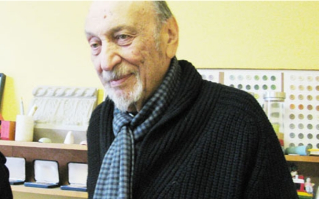
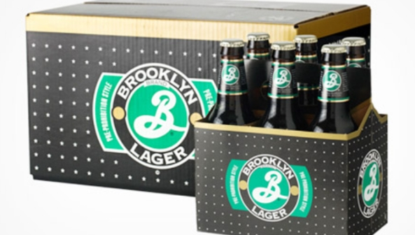
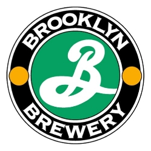

- 
- Just Do the Work!
-어떻게 작업하시나요? 이를테면, 컴퓨터 앞에서 어떻게 시작하시나요?
"내 두 손은 컴퓨터를 만진 적도 없고, 컴퓨터를 만질 일도 결코 없을 것이다.
(글레이저씨는 대화 내내 손에 연필을 쥐고 있었다. ) 컴퓨터는 내 아이디어 를
실행하는 도구다. 내 아이디어는 주로 다른 곳에서 온다. 거의 드로잉이다. 나는
컴퓨터 옆에 사람을 두고, 지시하면서 무엇이 리얼한가를 이해하기 위한 도구로
사용한다. 내 작업 과정은 바로 일에 뛰어드는 것이다. Just Do the Work! 과정이
없다. 과정은 작업하면서 나온다. 만일 작업하지 않으면, 과정이 나오지 않는다.
우리는 길을 나서기 전까지 어디로 가는 지 모른다."
-어떻게 좋은 디자이너가 될 수 있을까요?
"세상엔 아트(ART)와 디자인(DESIGN)의 관계에 대한 혼란과 오해가 많다. 그저 하는
방법을 배우라! 콘서트 피아니스트가 되려면, 꾸준히 연습을 해야한 다. 좋은 디자이너가
되기 위해서도 반복해서 오랫동안 하다보면, 인정받게 될 것이다. 자기가 하고 있는 일을
정말 이해하는데는 아주 아주 오랜 시간이 걸린다. 내가 경력을 통해 노력해온 것은 같은
일을 하지 않고, 다른 일을 하면서 전문가가 되는 것이다. 인생에는 전략이 필요하다.
자신에게 충분한 호기심이 있다면 다른 길로도 갈 수 있을 것이다."
-


로고 디자인료 대신 주식을 받고 브루클린 브류어리의 로고와 상품 패키징을 28년간 해왔다.
-초보 디자이너의 보수는 얼마나 중요한가요?
"난 오래 전 디자이너로서 주급 65달러를 받고 일했다. 그때 난 이스트빌리지 세인트마크
스트릿에 살고 있었는데, 아파트 렌트는 25달러 정도였다. 65달 러면 많은 돈이 아니었다.
당시 나보다 훨씬 잘 버는 사람들이많았다. 기본적으로 나는 내 작업으로 사람들이 받아줄
때까지 기다렸다. 하지만, 나는 상당 히 잘 훈련이 된 셈이다. 12살 때부터 드로잉을 시작해서
High School of Music and Art에 다녔고, 쿠퍼 유니온에서 공부했다. 그리고, 이탈리아에서
조르지 오 모란디에게 배웠다. 그러니 20년간 준비, 훈련한 셈이다. 최소한 비전이 있었다."
-스튜디오 직원을 뽑으실 때 무엇을 보시나요? 디자인 테크닉이 중요한가요?
"일단 내가 그 사람을 좋아해야 하며, 그 다음은 두뇌다. 지성을 대치할 것은 세상에 없다.
기술적인 것은 특별히 그것이 요구되는 경우가 아 니라면, 그다지 중요하지 않다."
-고객은 얼마나 중요한가요?
"싫어하는 사람과는 일할 수 없다. 관계는 무척 중요하다. 우리는 거의 30년간 브루클린
브류어리 패키징을 해왔다. 스티브 힌디와 톰 포터가 처음 찾아와 서 로고를 디자인해달라고
했는데, 돈이 없다고 해서 주식을 받았다. 그때 디자인 료로 돈을 받지않은 대신 돈을 상당히
많이 벌었다. 우리는 같은 배를 타고 있다고 생각했고, 같은 결과를 성취하기를 원했다. 애정과
비전이 있는 관계였다. 대부분의 관계는 지배 관계일 수 있지만, 고객과의 관계가 좋은 에너지와
가능성이 있을 때 성공적이다. 우린 성공적이었다. 그건 매우 중요하다."
-예술적으로 타협할 때도 있으신지요?
"나는 타협하지 않는다. 타협이라는 것은 자기 중심적인 말이다. 사람들에게 해가 되는 일이면,
타협인 것이다. 담배회 사를 위해 일한다면 타협일 것이다. 나에겐 예술적 타협이라는 말은 허튼
소리에 불과하다. 그건 도덕적인 문제다."
-시각적으로 여전히 당신을 즐겁게하는 것이 있나요?
"나에겐 모든 것이 기적적이다. 며칠 전 이 두 개가 다른 방에 있었는데, 같은 것이라는 걸 전혀
몰랐다. 모든 것이 이처럼 연결되어 있다. 인간의 경험에 는 연결되지 않은 것이 없다. 이것이
나에게 기적적인 체험들이며, 내가 매일 추구하는 일이다. 꼭 누가 기적이라고 말하지 않더라도."
-가장 좋아하셨던 작업은 무엇인지요? "
난 가장 좋아했던 작업이 없다. 제일 좋아했던 음식·색깔도 없다. 난 내가 지금하는 일을 제일
좋아한다."
분홍색과 녹색 날개가 달린 곤충과 글레이저씨의 작품의 미스테리 커넥션.
인터뷰 중 두 개의 액자를 탁자에 올려놓았다.
-시간이 없을 때는 영감을 얻기 힘들지 않으신가요?
"나는 영감(inspiration) 을 믿지 않는다. 헛소리다. 영감은 능력 부족에 대한 변명이다.
단지 일을 해라. Do the Work! 때로는 잘 되고, 때로는 잘 안된다. 영감은 잘못된 생각이며,
터무니없는 변명이다. '난 영감을 받지 못했다'는 부정적인 생각이다. 프로페셔널이면, 디자이너면
작업을 해라. 영감 은 형편없는 일에 대한 변명일 뿐이다. 영감엔 관심 없다."
-전시회를 보러 다니시나요? 이를테면, 첼시 갤러리 등지에서
부상하는 작가들의 전시에 관심이 있으신가요?
"나는 이머징 아티스트를 믿지 않는다. 잡지에서 부상하는 작가들 보느니 메트로폴리탄뮤지엄에서
벨라스케즈 회화를 다시 보는 편이 낫다. 부상하는 작 가들은 아주 적은 퍼센트에 불과하다. 그들을
발굴해야 하며, 누가 하는가? 여러 변수가 있다. 모든 사람들이 아티스트라고 하지만, 일의 경험이
정신을 변형시킨다. 그게 유일한 이슈다 · 그렇지 못하면, 아트(ART)가 아니다. 아무리 많은 작품을
제작하더라도 마음을 변형시키지 못한다면, 그건 아트 (ART)가 아니다. 그것은 물질을 그저 다루는
것이다. 만일 관람객에게 그런 희귀한 체험을 하게 만들어준다면, 그건 아트다. 현실을 색다르 게 보게
해주는 것만이 아트다."
2009년 미예술공헌메달을 받는 밀턴 글레이저.
-무척 많은 것을 성취해오셨는데요, 행복하실 것 같습니다.
"나는 무척 운이 좋은 사람이다. 미국에서 사람들은 부와 명예를 중시하는데, 이것은 삶을 갉아 먹는
두 요소다. 이것 때문에 고통받는 사람도 옆에서 봤다. 미국에선 무엇이든 돈으로 환산한다. 유명해지는
것과 돈이 행복을 살 수 있나? 나는 행복한 사람이다."
-여생에 꼭 하고 싶으신 일, 버킷 리스트가 있으신지요?
" 일을 잘 하고 싶을 뿐이다. 성취하고 싶다."
-뉴요커로서 현재 럭셔리 콘도 등 개발의 이름으로 변화하고 있는 스카이라인, 그리고 리쫄리 서점과
펄 페인트 등 뉴욕의 명소들이 사라져버리는 것에 대해 어떻게 생각하시나요?
"뉴욕에서 말도 안되는 것이라면, 도대체 이해할 수 없다는 것이다. 걸어서 코너를 돌면, 새 건물이 불쑥
들어서 있다. 이건 프로젝션 스크린같 다. 한 정신 상태를 보여주는 도시가 아니다. 파리에 가면, 코너를
돌아 빈둥거릴 수 있고, 파리 정취가 난다. 하지만, 어쩌겠나? 난 평생 뉴욕에서 살아왔고, 익숙해 있다."